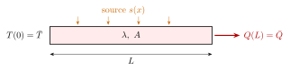

Exercise 2: Steady Heat Conduction
The claim at the end of Lecture 2 was that the derivation steps are general, the symbols incidental. This exercise makes you prove it to yourself: you will rebuild the entire arc of Lecture 2 — balance law, boundary value problem, collocation, Galerkin, shape functions, element matrices, assembly — for the steady temperature field in a rod. A guided Jupyter notebook accompanies the exercise (Exercise_2_Heat_FEM.ipynb); it follows the same path as the tasks below, grouped into slightly different parts.
The physics kit
A rod of length \(L\) and cross-section \(A\), insulated on its lateral surface so heat flows only along \(x\) (Fig. 2.8). Unknown: the temperature field \(T(x)\). Available relations — the four you need (the notebook mixes in a few distractors):
| relation | formula | role | |
|---|---|---|---|
| (a) | temperature gradient | \(g = \dfrac{\mathrm{d}T}{\mathrm{d}x}\) | “kinematics” |
| (b) | Fourier’s law | \(q = -\lambda\, g\) | material law |
| (c) | heat-flow resultant | \(Q = A\,q\) | cross-section bundling |
| (d) | steady heat balance of a slice | \(\dfrac{\mathrm{d}Q}{\mathrm{d}x} = s(x)\) | balance |
Here \(\lambda\) is the thermal conductivity (W/(m K)), \(q\) the heat flux (W/m\(^2\), positive in \(+x\)), and \(s(x)\) a distributed heat source per unit length (W/m) — electrical heating, say. The minus sign in (b) is physics: heat flows from hot to cold, down the gradient. For the bar the minus sign sat in the balance (\(N' = -n\)); here it sits in the material law.

Tasks
Build the differential equation. Chain the relations (a)–(d) in the right order — draw the square diagram in the style of Fig. 2.3 first — and derive \[\frac{\mathrm{d}}{\mathrm{d}x}\!\left(\lambda A \frac{\mathrm{d}T}{\mathrm{d}x}\right) + s(x) = 0 .\] Compare term by term with (2.5): which quantity plays \(u\)? which plays \(N\)? which plays \(EA\)? Where did the minus sign of Fourier’s law go?
State the boundary value problem. Domain, strong form, and the admissible boundary conditions. What is the thermal meaning of an essential condition? Of a natural one? Of a homogeneous natural one? (The last is a perfectly insulated end — the thermal twin of a free bar end.) Convince yourself the “one of each conjugate pair \((T, Q)\) per boundary point, at least one \(T\) somewhere” rule holds — what would it physically mean if both ends only prescribed flux?
Reference solution. For constant \(\lambda A\), constant source \(s_0\), \(T(0)=\bar T\), insulated right end (\(Q(L) = 0\)), solve the BVP exactly by integrating twice.
Collocation. With the ansatz \(\tilde T = \bar T + a_1 x(2L - x)\) (why does it satisfy both the essential condition at \(x=0\) and, conveniently, \(\tilde T'(L)=0\)?), compute the residual and collocate; compare with task 3.
Galerkin. Same ansatz, Galerkin weighting, weak form. Verify you reproduce the exact solution and explain why (Section 2.6 principle). Then switch to a linear source \(s = s_0 x/L\): now collocation and Galerkin differ. Which is closer to the exact cubic?
Element matrices. With hat functions on an element of length \(h\), show \[\mathbf{k}^e = \frac{\lambda A}{h}\begin{bmatrix}1&-1\\-1&1\end{bmatrix}, \qquad \mathbf{f}^e = \frac{s_0 h}{2}\begin{bmatrix}1\\1\end{bmatrix}.\] You may copy the Lecture 2 computation symbol for symbol. That is the point.
Assemble and solve. Four elements, non-uniform if you dare; impose \(T(0)=\bar T\) by partitioning (1.5); solve; plot against task 3; check nodal exactness. Then re-solve with a second load case (different \(s\), heated tip) without re-assembling \(\mathbf{K}\).
Only now: the intuitive picture. Each element acts as a thermal resistor between its nodes, conductance \(\lambda A/h\) — the heat-flow analogue of the spring. Electrical network intuition (conductances in series, Kirchhoff balance at nodes) would have given you \(\mathbf{k}^e\) in one line.
Remark
We ran the thermal problem in the opposite order to the mechanical one: the formal derivation first, the intuitive picture last. For the bar, the picture (springs) came first and the derivation confirmed it; here you experience that the formal machinery works even before you possess any intuition — which is precisely the situation you will be in for every new physics you meet from now on. The derivation is the method; the intuitive picture is the bonus.